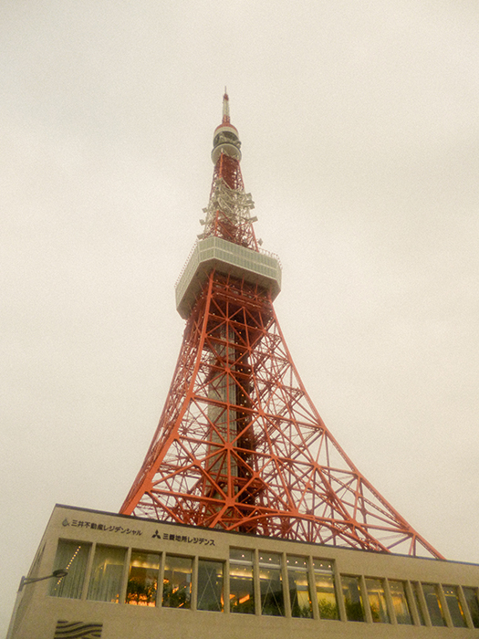
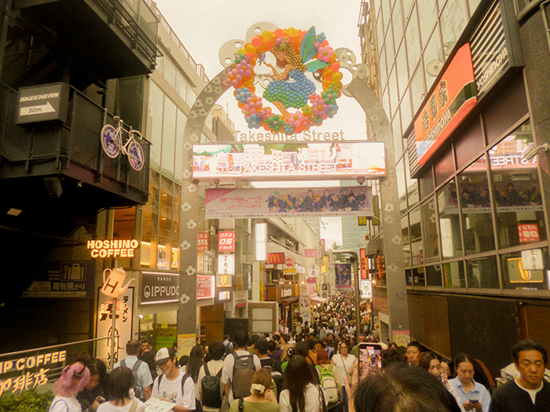
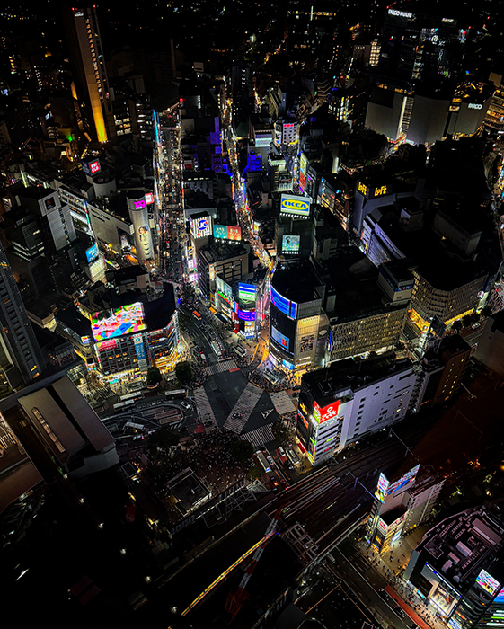
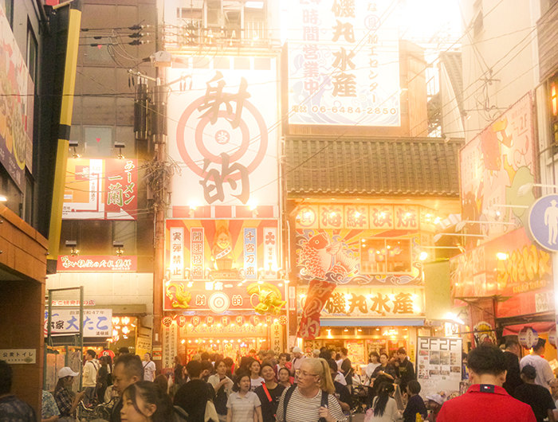
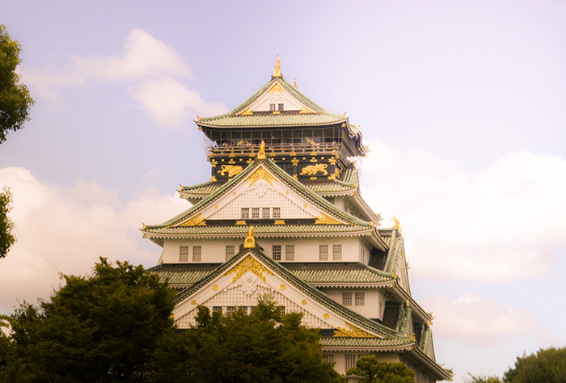
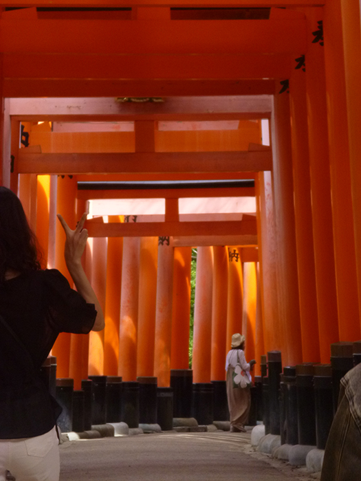
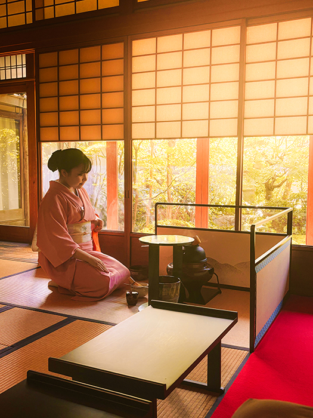
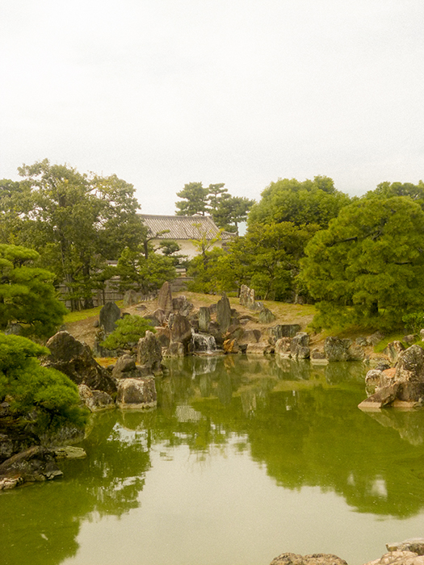

The Capital city of Japan and the worlds most populated metropolis. It offer’s unlimited amounts of shopping, food, entertainment, culture. I spent about 5 days in Tokyo which was enough to see quite a few attractions but I wish I had more time to explore it on a deeper level.
Tokyo Tower
Observe a 360 view on the second tallest tower in Tokyo
Link to book:
Harajuku
Renowned for its colourful street art, youth street fashion and cosplay along Takeshita Street. Known for its amazing crepes.
Shibuya and Shibuya Sky
Walk the famous Shibuya scramble crossing and saw to the sky at Shibuya Sky getting a glimpse of the biggest city in the world.
Disney land
The happiest place on earth! Its crowded and packed from every side. Pro tip is to be early; you will have to wait a while. But the entrance line moves fairly quick.
TeamLab Planets
Explore a variety of different interactive art installations such as:
Known for its night life, food culture – famous food like Takoyaki, a ball shaped snack made of a wheat-based batter typically with diced octopus. Walk down Tenjinbashi-suji Shopping Street one of Japan’s longest shopping strips of approximately 2.6 kilometres long with over 600 shops. This was definitely one of my favourite stops of my whole Japan trip.
Osaka Castle
Famous for its well-built stone wall. A major landmark of Japan, which played a massive role in the unification of Japan during the sixteenth century of the Azuchi-Momoyama period.
Kyoto formally Japan’s capital city from 749 to 1868. It’s known for its preserved traditional temples, shrines and spectacular Geisha performances. With many visitors and residents Japan renting the beautiful kimono, Japanese traditional clothing.
Fushimi Inari Shrine
Famous for its hundreds of traditional red gates – known as torii gates – it is one of the most popular attractions in Kyoto.
Japanese Tea Ceremony
Experience the world of Matcha in Ryoanji Kenoshita Cho. Understand the significance of Japanese culture and practice of ritualizing the act of preparing and drinking tea. It’s more than just making a drink, it’s a form of art that has the opportunity to calm and relax the mind.
Moto-rikyu Nijo Castle
Kyoto’s largest castle built in the year 1603 is surrounded by stone walls and two moats, with a large beautiful garden.
